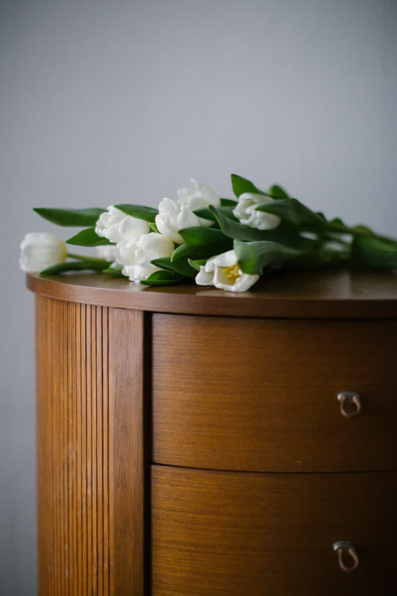

В ожидании перемен
Когда вместе с радостью приходят тревога, сомнения и непривычные чувства.
Не обязательно справляться со всем одной.
Помогу услышать себя, найти опору и пройти
свой путь — бережно, в вашем темпе.
Три коротких вопроса — и свой первый шаг.
ПОДДЕРЖКА МОЖЕТ НАЧАТЬСЯ ПРЯМО СЕЙЧАС
Выберите то, что нужно сейчас.
Без регистрации и правильных ответов.
01 / ВАША ИСТОРИЯ ВАЖНА
И для каждого из них есть место.
Выберите то, что ближе вам сейчас.
Когда вместе с радостью приходят тревога, сомнения и непривычные чувства.
Найти внутреннюю опору, поговорить о страхах и о том, какая поддержка нужна именно вам.
Сохранить контакт с собой и партнёром, когда жизнь и привычные роли меняются.

Вам не нужно становиться
идеальной, чтобы быть
достаточно хорошей.
02 / ДАВАЙТЕ ЗНАКОМИТЬСЯ
Меня зовут Ирина Ошемёткова.
Я клинический, перинатальный и семейный психолог.
Материнство меняет многое. Иногда — больше, чем мы ожидали. Я помогаю женщинам и парам говорить о сложном, замечать свои потребности и находить собственные решения.
В моей практике нет единственного сценария для всех. Подход и инструменты я подбираю индивидуально — в разговоре с вами.
МАЛЕНЬКАЯ ПАУЗА. ТОЛЬКО ДЛЯ ВАС.
Сейчас не нужно ничего решать.
Подарите себе минуту внимания и спокойного дыхания.
03 / БЛИЖЕ К СЕБЕ
Мысли и практики, к которым можно
возвращаться в своём ритме.
ПОДДЕРЖКА В ПОВСЕДНЕВНОСТИ
В основе этих практик — материалы моего бота: внимание к чувствам, дневник состояния и небольшие шаги заботы о себе.
Начните с простого вопроса. Без правильных ответов.
Найти свою практику ↗Ваш ответ не сохраняется и никуда не отправляется
04 / ПЕРВЫЙ ШАГ — ВАШ
Можно прийти без готового запроса.
Со словами «мне непросто» — уже достаточно.
ПознакомимсяВы расскажете столько, сколько захотите.
Найдём важноеВместе сформулируем то, с чем хочется работать.
Определим следующий шагОбсудим подходящий формат и дальнейшие встречи.
Удобное время согласуем лично.
Стоимость уточняется при записи.
ЧТО ВАЖНО ЗНАТЬ
Не нужно готовить речь или формулировать «идеальный» запрос. Можно рассказать о том, что сейчас занимает ваши мысли. На первой встрече мы вместе найдём точку, с которой будет удобно начать.
Мы заранее согласуем время и удобный способ видеосвязи. Для встречи подойдёт спокойное место, где вы сможете говорить свободно, и стабильное подключение к интернету. Консультация длится 50 минут.
Да. Я работаю с парами, в том числе в период планирования беременности и при изменениях семейных отношений. Формат, длительность и стоимость совместной встречи обсудим при записи.
Нет. Ваши отношения, личные границы, усталость и чувства тоже важны. Вы можете обратиться с темой, которая волнует вас, и мы обсудим, смогу ли я быть полезна.
Это зависит от вашего запроса и комфортного для вас темпа. На первой встрече мы обсудим ожидания и возможный план. Решение о продолжении работы всегда остаётся за вами.
ВАМ НЕ ОБЯЗАТЕЛЬНО ПРОХОДИТЬ ЭТО ОДНОЙ